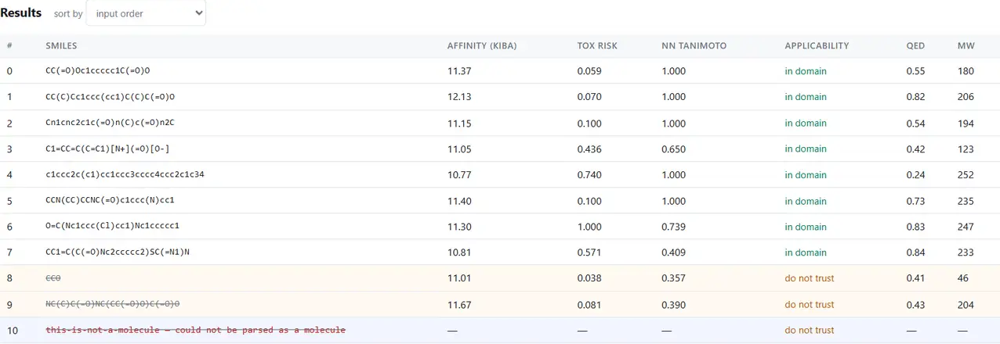
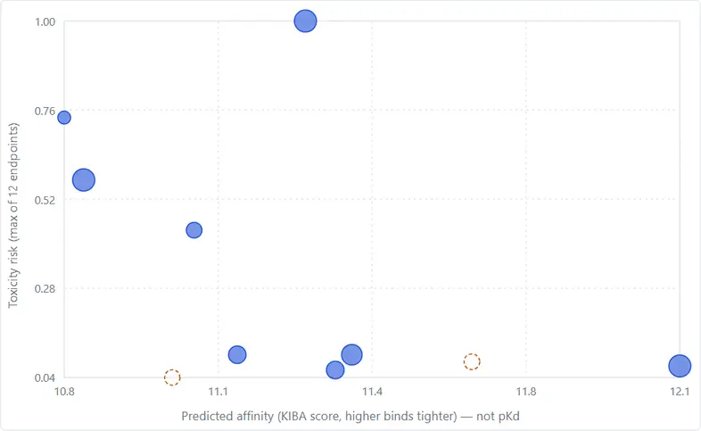

Bringing a drug to market requires selecting a handful of molecules, out of millions of candidates, for laboratory synthesis and testing. Because each experimental test is slow and costly, candidates are narrowed computationally first. The conventional filter predicts binding affinity: how tightly a small molecule attaches to the protein that drives a disease. A molecule that binds tightly but is toxic, however, fails later in development, when far more has been invested in it [1].
Non-technical summary. Our tool takes a list of molecules and a target protein, and returns two scores per molecule: how strongly it is predicted to bind, and how likely it is to be flagged on each of twelve laboratory toxicity assays. It ranks candidates on both axes at once and draws the best-ranked ones in 3D. Critically, it also reports how similar each molecule is to the data the models were trained on, and refuses to stand behind predictions for molecules that are too dissimilar.
That last element is not decoration. Our central research question was quantitative: how far does accuracy degrade when test molecules are structurally unlike the training molecules? Answering it required measuring the degradation, and then asking whether the model itself knows when it is in that regime. It does not. This report is organised around that result and its consequences for how such a tool should present its own output.
Molecules are supplied as SMILES strings, a text encoding of atoms and bonds. All datasets are public academic benchmarks.
| Source | Size | Role |
|---|---|---|
| Tox21 [2], via Therapeutics Data Commons [3] | 7,831 compounds → 6,143 after standardisation | 12 toxicity endpoints |
| hERG [3] | 11,052 compounds | independent replication of the split effect |
| KIBA [4] | 2,030 molecules × 229 proteins = 117,193 pairs | binding affinity |
| DAVIS [3] | — | second affinity dataset |
| PoseBusters / Astex Diverse [5] | 428 + 85 complexes | pose-accuracy benchmark |
| PDBbind refined set | 5,311 complexes | first affinity data here with a physical unit |
| Protein Data Bank [6] | 29 structures | 3D view |
Every dataset passes through one preprocessing pipeline: parsing, removal of unparseable entries, salt stripping, canonicalisation and deduplication by InChIKey. Stereochemistry is dropped, so no model here can express stereo-dependent activity.
We then apply five split protocols, each placing the test set further from the training distribution: random; Bemis–Murcko scaffold; held-out molecules (cold-drug); held-out proteins (cold-target); and held-out scaffolds. A random split assigns structurally similar molecules to both sides, so the test set contains near-relatives of training molecules; a scaffold split does not. The difference between the two is our measure of generalisation, and it is the quantity this project reports rather than any single accuracy.
Split index files are committed to the repository rather than recomputed, so every model in every experiment is evaluated on literally the same molecules. This is what makes results from different phases comparable at all.
A caveat on provenance. The Tox21 labels redistributed through MoleculeNet and TDC — the route we took — were altered during integration, with labels imputed or manufactured [7]. Our absolute Tox21 numbers are therefore not directly comparable with published values, and we treat the penalty between splits, not the level, as the result.
The baseline represents each molecule as a 2048-bit Morgan fingerprint, in which each bit indicates the presence of a substructure, and fits a random forest. We compare two learned representations against it: a Graph Isomorphism Network [8] trained from scratch on the molecular graph, and a fine-tuned pretrained chemical language model (ChemBERTa). Binding prediction additionally needs a protein representation; we concatenate a frozen ESM-2 embedding [9] (1280-dimensional, mean-pooled) with the molecular representation. ESM-2 stays frozen because our training set is far too small to fine-tune a model of that size. One configuration shares a single molecular encoder across both task heads, to test whether the two tasks transfer to each other.
Raw classifier scores are not probabilities. We fit isotonic regression on the scaffold validation fold, which reduces expected calibration error from 0.0653 to 0.0252. Separately, we evaluate four signals for deciding when the model should decline to answer, measured as PR-AUC at 50% coverage: distance of the predicted probability from 0.5; disagreement among forest trees; a random baseline; and Tanimoto similarity to the nearest training molecule.
Poses are generated with AutoDock Vina 1.2.7 (exhaustiveness 8, 9 modes,
single-threaded for determinism). The ligand is rebuilt by ETKDG rather than
taken from the crystal, so the answer is not handed to the search. RMSD is
RDKit's symmetry-corrected, in-place CalcRMS — not
GetBestRMS, which superimposes the pose first and would hide
placement error. Every top-ranked pose additionally passes through the
PoseBusters battery [5]: 28 checks covering bond lengths and angles, ring
flatness, internal energy, and steric clash with protein, cofactors and waters.
Accuracy and physical validity are reported separately, because a pose can be in
roughly the right place and still be chemically impossible.
The tool is a FastAPI service over the committed models plus a React interface. Three implementation rules follow from the results in Section 4: output row order always matches input row order, and a molecule that fails to parse keeps its row with an error rather than vanishing; applicability is a required field in the response schema rather than an optional one; and the affinity axis is anchored to the measured KIBA distribution rather than auto-scaled to the submitted batch. Models, protein embeddings and the applicability reference are committed (32 MB total), so a fresh clone predicts immediately with no dataset download and no GPU.
| Task / split | Random | Shifted | Penalty |
|---|---|---|---|
| Tox21, macro ROC-AUC (scaffold) | 0.8324 ± 0.0181 | 0.7611 ± 0.0227 | 0.0713 |
| hERG-large, macro ROC-AUC (scaffold) | — | — | 0.0526 |
| KIBA, Pearson r (cold-drug) | 0.8219 | 0.7289 | 0.0930 |
| KIBA, Pearson r (cold-target) | 0.8219 | 0.6438 | 0.1781 |
The GIN matched the random forest at every training-set size we tested and never beat it. The strongest affinity model was the frozen ESM-2 embedding fed to a small MLP: Pearson 0.8510 ± 0.0043 over five seeds. What won was a pretrained model we did not train.
The margin also depends on how seriously the baseline is taken. Tuning one
random-forest hyperparameter (max_features 'sqrt' → 0.3) cut the
MLP's apparent lead on KIBA-random from +0.0669 to +0.0291, and to +0.0058 on a
5% subsample. Had we not retuned, we would have reported a three-fold larger
effect and believed it.
| Abstention signal (50% coverage) | PR-AUC | |||
|---|---|---|---|---|
| Distance of predicted probability from 0.5 | 0.2079 | |||
| Disagreement among forest trees | 0.2024 | |||
| Abstaining at random | 0.3983 | |||
| Tanimoto distance to the training set | 0.4904 |
| Arm | Toxicity ROC-AUC | Affinity r | Grad. cosine | Steps in conflict |
|---|---|---|---|---|
| sequential, affinity last (original) | 0.6533 ± 0.0290 | 0.7094 | n/a | n/a |
| sequential, toxicity last | 0.7569 ± 0.0313 | 0.5563 | n/a | n/a |
| sequential, batch-balanced | 0.7085 ± 0.0290 | 0.4175 | n/a | n/a |
| joint (both gradients, one step) | 0.7643 ± 0.0320 | 0.6780 | +0.0246 | 39.0% |
| joint + PCGrad [10] | 0.7401 ± 0.0194 | 0.6038 | +0.0243 | 39.3% |
| soft parameter sharing | 0.7748 ± 0.0223 | 0.7308 | n/a | n/a |
| task-specific adapters | 0.7525 ± 0.0204 | 0.6721 | +0.0294 | 37.3% |
Two readings matter here. First, gradient conflict is real but is not the mechanism: the mean cosine between task gradients is +0.0246 — near-orthogonal and marginally aligned — yet 39.0% of individual steps do conflict, PCGrad projects exactly those, and nothing improves. Second, the arms must be judged on both axes. Reordering restores toxicity but drops affinity from 0.7094 to 0.5563: it moves the damage to whichever task runs last rather than removing it. Only joint stepping holds both.
Our original docking benchmark was 20 co-crystal structures of a single protein (EGFR), which cannot support a claim about docking performance; we recorded this at the time and a reviewer independently raised it. Replacing it with 513 cross-target complexes gave 52.8% top-pose and 78.5% best-of-9 accuracy within 2 Å over the 447 that produced a pose, against 41.0% and 76.0% on the superseded set. 98.4% of top poses pass all PoseBusters checks; 0.4% are within 2 Å yet fail one — in roughly the right place, chemically impossible.
Of the 66 complexes with no pose, 61 were deliberately excluded because the residues Meeko could not parameterise line the binding site, and only 5 were genuine preparation failures. Those exclusions are not docking misses. Whether they bias the rate is testable: excluded ligands average 23.3 heavy atoms against 25.3 among those scored, while within the scored set larger ligands are measurably harder (24.2 for hits against 26.5 for misses, p = 0.024). The excluded complexes are therefore if anything slightly easier, so the exclusion pushes the reported rate down. The per-target spread that one binding site could never have shown: Astex 62.3% against PoseBusters 50.8% on the same protocol.


Verified end to end: the serving path reproduces the training metric exactly (Pearson 0.8487 on all 11,720 held-out KIBA pairs, against 0.8487 at training time). Seventy automated integrity checks over the committed artefacts pass.
| Method (KIBA, random split) | CI | MSE |
|---|---|---|
| KronRLS [11] | 0.782 | 0.411 |
| SimBoost, gradient-boosted trees [11] | 0.836 | 0.222 |
| DeepDTA, CNN + CNN [11] | 0.863 | 0.194 |
| GraphDTA, GIN [12] | 0.891 | 0.139 |
| Ours, tuned random forest | 0.8420 | 0.2297 |
Three of our negative results have since been reproduced independently, which changes how they should be read. A 25-model, 25-dataset benchmark under scaffold splits finds almost no pretrained molecular embedding significantly better than count-ECFP fingerprints, with GIN ranking 20th of 23 [13] — our GIN matching but never beating the random forest is the same observation. ToxBench reports a Tox21 scaffold penalty of 0.057–0.079 across four model classes [14], inside our interval. And a 718,800-pair study finds architecture rankings reverse under dual distribution shift [15], of which our modality ablation is an instance: on the cold-target split a drug-only model beats the two-modality model by 0.0927 Pearson. The headline is therefore not that our models were weak, but that the weakness is a property of the problem setup that several groups measured concurrently.
Worked. Choosing what not to train: the strongest affinity result came from a frozen pretrained protein model. Treating the baseline as a real competitor, which halved a result we would otherwise have overclaimed. Replaying committed splits rather than recomputing them. And checking the serving path against the training metric rather than merely that models load — this caught a predictor feeding raw ESM-2 vectors to a model trained on standardised ones, scoring 0.4832 instead of 0.8487 while producing entirely plausible output.
Hard. Reporting negative results honestly is harder than obtaining them; the discipline that made it possible was mechanical, regenerating every reported number from a committed artefact and letting a script write the report. Widening the docking benchmark exposed that our own EGFR receptors had been pre-cleaned, hiding a preparation failure that affected roughly a third of external complexes. And a full disk destroyed one multi-hour experiment outright and truncated another at 253 of 513 complexes, which is why the docking script now resumes from existing poses with a settings stamp.
The proposal committed to a generative SMILES model for candidate molecules;
we abandoned it deliberately, as it is weakly coupled to the reliability question
the project answers and could not be evaluated credibly in the time available.
The DiffDock comparison has a complete, checked harness
(src/42_diffdock_compare.py) that was never run: DiffDock pins
Python 3.9.18 and torch 1.13.1+cu117 against our 3.11.17 and 2.14.1+cu126, so it
requires its official container, whose builder stage consumed over 20 GB of
intermediate layers twice without finishing on a host disk that was 919 of 931 GB
full with unrelated data. It is reported as not run rather than estimated. The
queue and database in the original design were dropped: inference takes 0.19 s for
eleven molecules, so neither would change any answer.
Following the division set out in the project plan, Jiaxin Liu led the molecular side — standardisation, splits, the Tox21 and hERG baselines, the graph and language-model encoders, calibration, the abstention study, atom attribution, and the application's frontend. Zhenyu Wang led the protein and structural side — the ESM-2 embedding pipeline, the KIBA and DAVIS affinity models, docking and the PoseBusters integration, the structural benchmarks, and the backend service. The multi-task experiments, the reproducibility harness and this report were joint work.
Public repository: github.com/JiaxinLiu2000/Screening-Drug-Candidates-with-3D-Visualization
Predicting from a fresh clone requires no dataset download and no GPU; trained models and the 229 protein embeddings are committed.
Scripts src/01–src/37 produce every
measurement quoted above, in order; src/38 exports the committed
models and src/39–src/42 are the later additions.
src/15_data_audit.py recomputes each quantity from the committed
artefacts (70 checks) and src/08_verify_repro.py --with-rf checks
they rebuild byte-identically.
Every prompt given to the assistant is logged verbatim, with its
date and purpose, in PROMPTS.md in the repository (13 prompts, 986
lines, including the full text of every design document referenced by a prompt).
The log is reproduced there rather than here only because of its length; it is
part of the submission.
In summary: prompts 1–5 set up the repository and ran Phases 1–3 (baseline, data-foundation validation, the shared-encoder ablation); prompt 6 ran Phase 4 (external comparison, calibration, abstention, retuned baselines); prompt 7 drafted résumé text; prompts 8–9 packaged the repository for distribution and moved it to GitHub; prompt 10 surveyed literature and tooling released since development stopped and drafted the application's functional design; prompt 11 addressed the instructor's two comments and built the application; prompt 12 produced the presentation deck; prompt 13 produced the progress report. The assistant was asked for outcomes rather than for code, and the constraints that mattered most were on honesty rather than implementation: pin every dependency, commit the split index files, never fabricate or estimate a number, report negative results plainly, and never let a failing tool degrade into a heuristic that keeps the authoritative name.
Fuller treatments live in the repository:
ML_REPORT.md (the modelling story with every ablation table),
FINAL_REPORT.md (generated; every number traced to an artefact),
DISCUSSION.md, VERIFICATION.md (reproduction evidence
and what it does not cover), and results/DATA_AUDIT.md (all 70
integrity checks, one row each).